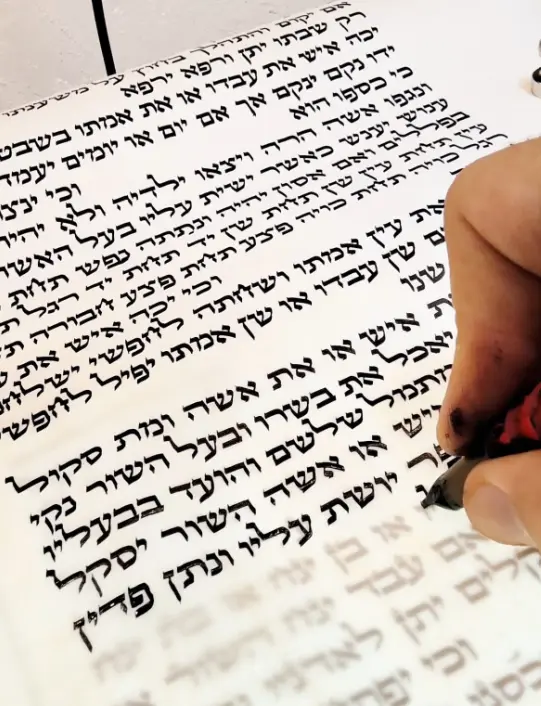
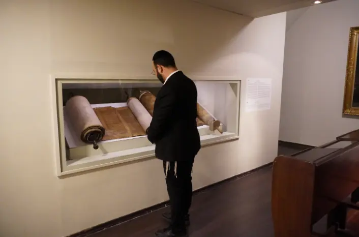

מכון אמנות הסת״ם · בהנחיית הרב יוחאי אוחיון
מהאות הראשונה ועד לכתב הלכתי, מדויק, יפה וזורם — בשיטה מסודרת ובליווי אישי.
שתי קבוצות בוקר · 6 תלמידים בלבד בכל קבוצה
לפני שמחליטים
צפייה קצרה בכתיבה עצמה נותנת לך להרגיש את הדיוק, הקצב והדרך שבה נבנית כל אות.
רוצה ללמוד כך? לפרטים על מחזור אלול ←

לא מנחשים את הדרך
לומדים ליד השולחן: רואים כל תנועה, מבינים את מבנה האות ומתרגלים נכון. כך נבנה כתב ספרדי שאינו רק יפה לעין, אלא גם מדויק, הלכתי וזורם ביד.
רוצה לבדוק אם הקורס מתאים לך? ←מחזור אלול
קורס כתיבת סת״ם בכתב ספרדי למתחילים, בקבוצה קטנה ועם ליווי אישי לאורך הדרך.
לבדיקת התאמה והרשמה6 תלמידים בלבד בכל קבוצה, כדי שכל תלמיד יקבל התייחסות אישית אמיתית.
לא מחקים צורה מבחוץ: מבינים את ההיגיון שמאחורי הכתב הספרדי ובונים אותו נכון.
הכתיבה נלמדת עם היסודות ההלכתיים שמעמידים מאחוריה כתב שאפשר לסמוך עליו.
בסיום נשארת ביד שיטה מסודרת, יכולת תרגול והבנה אמיתית של הכתב.
מה נמצא מעבר לשיעור
למתחילים שרוצים לבנות כתב הלכתי, מדויק, יפה וזורם — מן היסוד, בהדרכה אישית ובסדר ברור.
המשך מעמיק למי שרוצה להסמיך את עצמו כסופר סת"ם מוסמך ומוכר. פרטים מותאמים אישית בשיחה עם הרב יוחאי.
לפרטי הקורס ←לימוד מקצועי של הכנסת פרשיות ושיפוץ בתי תפילין, בהתאם להלכה — לימוד פרטי, לא בקבוצה.
שאלות נפוצות
למי שרוצה להתחיל מן היסוד ולבנות כתב ספרדי הלכתי, מדויק, יפה וזורם. אין צורך להגיע עם ניסיון קודם בכתיבה.
המחזור נפתח בשתי קבוצות בוקר: 7:00–9:00 ו־9:00–11:00. בכל קבוצה 6 תלמידים בלבד.
פונים להרב יוחאי אוחיון בוואטסאפ או במייל לשיחת היכרות קצרה והרשמה. מספר המקומות מוגבל.
כן. אפשר להתרשם מן הכתיבה ומן השיעורים באתר ובערוץ היוטיוב של המכון.
אפשר למלא את הטופס בהמשך העמוד, לפנות בוואטסאפ למספר 053-417-7677, או לשלוח מייל ל-y0548431060@gmail.com.

על המורה
ראש מכון אמנות הסת״ם ומומחה בהוראת הכתב הספרדי. מחבר הספר "יסודות התפילין", ומלמד כתיבה, סגירת בתים וקשירת רצועות.
ההוראה במכון נשענת על מלאכה חיה, לימוד הלכה ומחקר של מסורת הכתב הספרדי — כדי לתת לתלמיד דרך בהירה, ולא רק תוצאה רגעית.
לשיחת היכרותמה אומרים התלמידים
מכתבי תודה אמיתיים, בכתב ידם, מתלמידים שסיימו את הקורס


העולם של המכון


